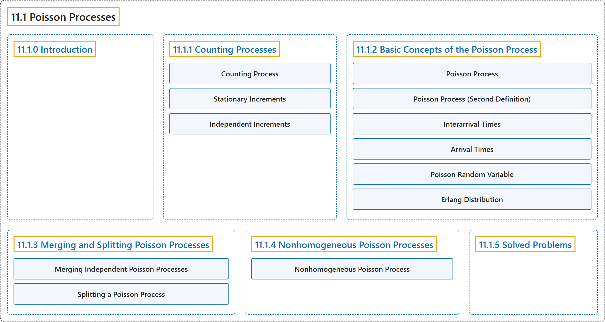

11.1 Poisson Processes
Classification

Glossary
| Term | Definition | 中文翻译 | Source |
|---|---|---|---|
| 11.1 Poisson Processes 泊松过程 |
(No definition) | （无定义） | Pishro-Nik, 2014, section 11.1 |
| 11.1.0 Introduction 介绍 |
(No definition) | （无定义） | Pishro-Nik, 2014, section 11.1.0 |
| 11.1.1 Counting Processes 计数过程 |
(No definition) | （无定义） | Pishro-Nik, 2014, section 11.1.1 |
| Counting Process 计数过程 |
"A random process \(\{N(t), t \in [0,\infty) \}\) is said to be a counting process if \(N(t)\) is the number of events occurred from time \(0\) up to and including time \(t\)." | 若 \(N(t)\) 表示从时刻 \(0\) 起至（含）时刻 \(t\) 为止发生的事件数，则称随机过程 \(\{N(t), t \in [0,\infty) \}\) 为计数过程。 | Pishro-Nik, 2014, section 11.1.1 |
| Stationary Increments 平稳增量 |
"A counting process has stationary increments if, for all \(t_2>t_1\geq0\), \(N(t_2)-N(t_1)\) has the same distribution as \(N(t_2-t_1)\)." | 若对所有 \(t_2>t_1\geq0\)，\(N(t_2)-N(t_1)\) 与 \(N(t_2-t_1)\) 具有相同的分布，则称计数过程具有平稳增量。 | Pishro-Nik, 2014, section 11.1.1 |
| Independent Increments 独立增量 |
"We say that \(X(t)\) has independent increments if, for all \(0 \leq t_1 \lt t_2 \lt t_3 \cdots \lt t_n\), the random variables \(\begin{align*} X(t_2)-X(t_1), \; X(t_3)-X(t_2), \; \cdots, \; X(t_n)-X(t_{n-1}) \end{align*}\) are independent." | 若对所有 \(0 \leq t_1 \lt t_2 \lt t_3 \cdots \lt t_n\)，随机变量 \(\begin{align*} X(t_2)-X(t_1), \; X(t_3)-X(t_2), \; \cdots, \; X(t_n)-X(t_{n-1}) \end{align*}\) 相互独立，则称 \(X(t)\) 具有独立增量。 | Pishro-Nik, 2014, section 11.1.1 |
| 11.1.2 Basic Concepts of the Poisson Process 泊松过程的基本概念 |
(No definition) | （无定义） | Pishro-Nik, 2014, section 11.1.2 |
| Poisson Process 泊松过程 |
"Let \(\lambda>0\) be fixed. The counting process \(\{N(t), t \in [0, \infty)\}\) is called a Poisson process with rate s \(\lambda\) if all the following conditions hold: \(N(0)=0\); \(N(t)\) has independent increments; the number of arrivals in any interval of length \(\tau>0\) has \(Poisson(\lambda \tau)\) distribution." | 设 \(\lambda>0\) 为定值。若计数过程 \(\{N(t), t \in [0, \infty)\}\) 满足以下全部条件，则称其为速率为 \(\lambda\) 的泊松过程：\(N(0)=0\)；\(N(t)\) 具有独立增量；任意长度为 \(\tau>0\) 的区间内的到达数服从 \(Poisson(\lambda \tau)\) 分布。 | Pishro-Nik, 2014, section 11.1.2 |
| Poisson Process (Second Definition) 泊松过程（第二定义） |
"Let \(\lambda>0\) be fixed. The counting process \(\{N(t), t \in [0, \infty)\}\) is called a Poisson process with rate \(\lambda\) if all the following conditions hold: \(N(0)=0\); \(N(t)\) has independent and stationary increments we have \(\begin{align*} &P(N(\Delta)=0) =1-\lambda \Delta+ o(\Delta),\\ &P(N(\Delta)=1)=\lambda \Delta+o(\Delta),\\ &P(N(\Delta) \geq 2)=o(\Delta). \end{align*}\)" | 设 \(\lambda>0\) 为定值。若计数过程 \(\{N(t), t \in [0, \infty)\}\) 满足以下全部条件，则称其为速率为 \(\lambda\) 的泊松过程：\(N(0)=0\)；\(N(t)\) 具有独立且平稳的增量，我们有 \(\begin{align*} &P(N(\Delta)=0) =1-\lambda \Delta+ o(\Delta),\\ &P(N(\Delta)=1)=\lambda \Delta+o(\Delta),\\ &P(N(\Delta) \geq 2)=o(\Delta). \end{align*}\) | Pishro-Nik, 2014, section 11.1.2 |
| Interarrival Times 到达间隔时间 |
"If \(N(t)\) is a Poisson process with rate \(\lambda\), then the interarrival times \(X_1\), \(X_2\), \(\cdots\) are independent and \(\begin{align*} X_i \sim Exponential(\lambda), \; \textrm{ for }i=1,2,3, \cdots. \end{align*}\)" | 若 \(N(t)\) 是速率为 \(\lambda\) 的泊松过程，则到达间隔时间 \(X_1\)，\(X_2\)，\(\cdots\) 相互独立，且 \(\begin{align*} X_i \sim Exponential(\lambda), \; \textrm{ for }i=1,2,3, \cdots. \end{align*}\) | Pishro-Nik, 2014, section 11.1.2 |
| Arrival Times 到达时间 |
"If \(N(t)\) is a Poisson process with rate \(\lambda\), then the arrival times \(T_1\), \(T_2\), \(\cdots\) have \(Gamma(n, \lambda)\) distribution. In particular, for \(n=1,2,3,\cdots\), we have \(\begin{align*} E[T_n]=\frac{n}{\lambda}, \; \textrm{and} \; \textrm{Var}(T_n)=\frac{n}{\lambda^2}. \end{align*}\)" | 若 \(N(t)\) 是速率为 \(\lambda\) 的泊松过程，则到达时间 \(T_1\)，\(T_2\)，\(\cdots\) 服从 \(Gamma(n, \lambda)\) 分布。特别地，对 \(n=1,2,3,\cdots\)，有 \(\begin{align*} E[T_n]=\frac{n}{\lambda}, \; \textrm{and} \; \textrm{Var}(T_n)=\frac{n}{\lambda^2}. \end{align*}\) | Pishro-Nik, 2014, section 11.1.2 |
| Poisson Random Variable 泊松随机变量 |
"Remember that a discrete random variable \(X\) is said to be a Poisson random variable with parameter \(\mu\), shown as \(X \sim Poisson(\mu)\), if its range is \(R_X=\{0,1,2,3,...\}\), and its PMF is given by \(\begin{equation} \nonumber P_X(k) = \left\{ \begin{array}{l l} \frac{e^{-\mu} \mu^k}{k!}& \quad \text{for } k \in R_X\\ 0 & \quad \text{ otherwise} \end{array} \right. \end{equation}\)" | 若离散型随机变量 \(X\) 的取值范围为 \(R_X=\{0,1,2,3,...\}\)，且其 PMF 为 \(\begin{equation} \nonumber P_X(k) = \left\{ \begin{array}{l l} \frac{e^{-\mu} \mu^k}{k!}& \quad \text{for } k \in R_X\\ 0 & \quad \text{ otherwise} \end{array} \right. \end{equation}\)，则称 \(X\) 为参数为 \(\mu\) 的泊松随机变量，记作 \(X \sim Poisson(\mu)\)。 | Pishro-Nik, 2014, section 11.1.2 |
| Erlang Distribution 爱尔朗分布 |
"The \(Gamma(n, \lambda)\) is also called Erlang distribution, i.e, we can write \(\begin{align*} T_n \sim Erlang(n,\lambda)=Gamma(n, \lambda), \; \textrm{ for }n=1,2,3, \cdots. \end{align*}\)" | \(Gamma(n, \lambda)\) 也称为爱尔朗分布，即我们可以写成 \(\begin{align*} T_n \sim Erlang(n,\lambda)=Gamma(n, \lambda), \; \textrm{ for }n=1,2,3, \cdots. \end{align*}\) | Pishro-Nik, 2014, section 11.1.2 |
| 11.1.3 Merging and Splitting Poisson Processes 泊松过程的合并与分解 |
(No definition) | （无定义） | Pishro-Nik, 2014, section 11.1.3 |
| Merging Independent Poisson Processes 独立泊松过程的合并 |
"Let also \(\begin{align*} N(t)=N_1(t)+N_2(t)+\cdots+N_m(t), \quad \textrm{for all } t \in [0, \infty). \end{align*}\) Then, \(N(t)\) is a Poisson process with rate \(\lambda_1+\lambda_2+\cdots+\lambda_m\)." | 再令 \(\begin{align*} N(t)=N_1(t)+N_2(t)+\cdots+N_m(t), \quad \textrm{for all } t \in [0, \infty). \end{align*}\) 则 \(N(t)\) 是速率为 \(\lambda_1+\lambda_2+\cdots+\lambda_m\) 的泊松过程。 | Pishro-Nik, 2014, section 11.1.3 |
| Splitting a Poisson Process 泊松过程的分流 |
"For each arrival, a coin with \(P(H)=p\) is tossed. If the coin lands heads up, the arrival is sent to the first process (\(N_1(t)\)), otherwise it is sent to the second process." | 对每一次到达，抛一枚满足 \(P(H)=p\) 的硬币。若硬币正面朝上，则该到达被送入第一个过程（\(N_1(t)\)），否则被送入第二个过程。 | Pishro-Nik, 2014, section 11.1.3 |
| 11.1.4 Nonhomogeneous Poisson Processes 非齐次泊松过程 |
(No definition) | （无定义） | Pishro-Nik, 2014, section 11.1.4 |
| Nonhomogeneous Poisson Process 非齐次泊松过程 |
"Let \(\lambda(t):[0,\infty) \mapsto [0,\infty)\) be an integrable function. The counting process \(\{N(t), t \in [0, \infty)\}\) is called a nonhomogeneous Poisson process with rate \(\lambda(t)\) if all the following conditions hold." | 设 \(\lambda(t):[0,\infty) \mapsto [0,\infty)\) 为可积函数。若计数过程 \(\{N(t), t \in [0, \infty)\}\) 满足下列全部条件，则称其为速率为 \(\lambda(t)\) 的非齐次泊松过程。 | Pishro-Nik, 2014, section 11.1.4 |
| 11.1.5 Solved Problems 例题详解 |
(No definition) | （无定义） | Pishro-Nik, 2014, section 11.1.5 |
References
Pishro-Nik, H. (2014). Introduction to probability, statistics, and random processes. Kappa Research. Retrieved October 28, 2026, from https://www.probabilitycourse.com/